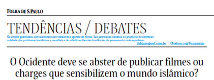
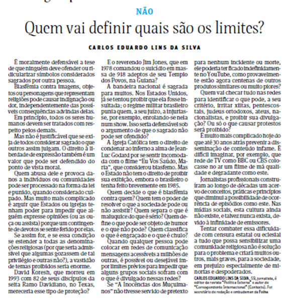
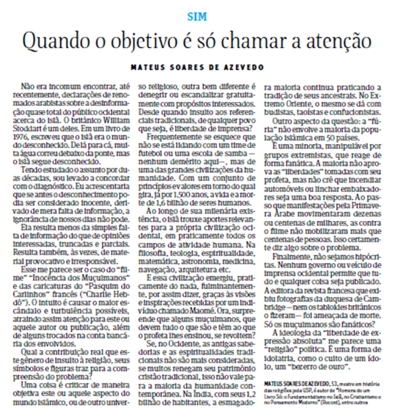
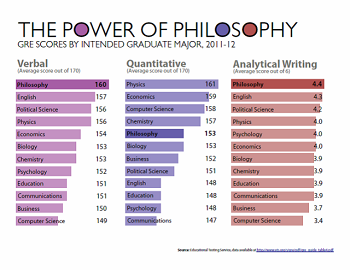

CAPÍTULO 4: TÍTULO RELACIONADO AO CONTEXTO DA INDÚSTRIA TÊXTIL E VESTUÁRIO
Linguagem e Manipulação Política
George Orwell
No nosso tempo, o discurso e a escrita política são em grande medida a defesa do indefensável. [... ] Assim, a linguagem política tem de consistir em grande medida em eufemismo, petição de princípio e pura vagueza nublada. Povoações indefesas são bombardeadas por aviões, os habitantes expulsos para o campo, o gado varrido a metralhadora, as cabanas postas a arder com balas incendiárias: a isto chama-se pacificação. Rouba-se as terras a milhões de camponeses que são obrigados a caminhar penosamente pelas estradas com não mais do que conseguem carregar: a isto chama-se transferência da população ou retificação das fronteiras. As pessoas são presas durante anos sem julgamento, ou levam tiros na nuca, ou são enviadas para morrer de escorbuto em explorações florestais no Ártico: a isto chama-se eliminação de elementos instáveis. Esta fraseologia é necessária quando se quer dar nome às coisas sem chamar as imagens mentais que lhe correspondem. Considere-se, por exemplo, um confortável professor inglês que defende o totalitarismo russo. Ele não pode dizer diretamente «Defendo que se deve matar os oponentes quando se consegue com isso bons resultados». Logo, dirá provavelmente algo do seguinte género:
«Apesar de conceder de bom grado que o regime soviético exibe certas características que o humanitário pode sentir-se inclinado a deplorar, temos, penso, de concordar que uma certa limitação do direito a fazer oposição política é um concomitante inevitável de períodos de transição, e que os rigores que o povo russo foi chamado a suportar foram amplamente justificados na esfera do que concretamente se alcançou.»
O próprio estilo inflamado é uma espécie de eufemismo. Uma massa de palavras latinas desce sobre os factos como neve macia, confundindo os contornos e apagando os pormenores.
O grande inimigo da linguagem clara é a insinceridade. Quando há um hiato entre os nossos verdadeiros objetivos e os objetivos declarados, voltamo-nos como que instintivamente para as palavras longas e para as expressões gastas, como um choco a largar tinta. [...]
[...]
Se simplificarmos a língua, libertamo-nos das piores tolices da ortodoxia. Não seremos capazes de falar os dialetos necessários, e quando fizermos um comentário estúpido a sua estupidez será óbvia, até para nós próprios. A linguagem política – e com algumas variações isto aplica-se a todos os partidos políticos, dos conservadores aos anarquistas – foi concebida para fazer as mentiras parecer verdades e o assassínio respeitável, e para dar uma aparência de solidez ao puro vento.
George Orwell, «Política e a Língua Inglesa», 1946, trad. de Desidério Murcho, § 20-22, 28
“Eufemismo” é uma figura de linguagem que emprega termos mais agradáveis para suavizar uma expressão
Quando uma afirmação é “vaga” não é possível saber qual é o seu valor de verdade.
Interpretação
1. Por que razão pensa o autor que «o discurso e a política são em grande medida a defesa do indefensável»?
2. Que exemplos de eufemismos são apresentados pelo autor?
3. Por que razão, segundo o autor, se recorre a eufemismos na linguagem política?
4. Qual é o grande inimigo da linguagem clara, segundo o autor? Porquê?
5. A linguagem política, segundo o autor, foi concebida para quê?
Discussão
6. Haverá uma conexão entre a linguagem obscura e a manipulação política? Porquê?
AIRES, Almeida; MURCHO, Desidério; e outros. A arte de pensar. Filosofia 11º. Lisboa: Didactica Editora, 2004.
Contextualizando


1. Reconstrua (reescreva) os argumentos contidos em cada artigo.
2. Escreva um texto posicionando-se em relação à pergunta apresentada pelo jornal (o Ocidente deve se abster de publicar filmes ou charges que sensibilizem o mundo islâmico? )
(Re)construindo conhecimentos
Retórica
Já vimos que os argumentos são uma ferramenta fundamental para a justificação de nossas crenças. Em filosofia, só aceitamos uma tese qualquer se tivermos boas razões para isso, isto é, se temos um bom argumento – a lógica do argumento é válida e as razões apresentadas são verdadeiras. O pensamento crítico consiste nisso: analisar a validade dos argumentos dos textos que lemos e checar a verdade das suas afirmações.
No entanto, a argumentação tem muitos aspectos que não são estudados pela lógica. Alguns desses aspectos são estudados pela retórica. Ao passo que a lógica estuda os aspectos que tornam os argumentos sólidos, a retórica estuda o que torna os argumentos eficazes.
Um argumento é eficaz quando convence ou persuade o interlocutor. Ele convence se a pessoa passa a acreditar na conclusão do argumento, se a pessoa muda de ideia, e ele persuade, se a pessoa passa a agir a favor daquilo que se desejava ou fazê-la agir de maneira diferente do que agia antes.
Nós podemos convencer um físico a mudar de ideia sobre a quantidade de elementos químicos que compõe o universo, se tivermos provas para isso – isto é, um bom argumento indutivo. Por outro lado, usando a retórica, podemos convencer alguém a não comprar ações da Petrobrás. Qual a diferença?
É que podemos convencer alguém ou persuadi-lo com maus argumentos que parecem bons. Basta que a pessoa se convença disso. Acontece que os seres humanos não são feitos apenas de razão. Nós também temos emoções e sentimentos, por exemplo.
Vamos ver como isso funciona. Pense num debate sobre o argumento dos vegetarianos de que não devemos consumir carne animal. Podemos apresentar uma versão do argumento do vegetarianismo ético da seguinte maneira:
1) Para sermos éticos, nossas ações devem maximizar (aumentar) o bem-estar ou minimizar (minimizar) a dor de todos os seres sensientes (capazes de sentir dor).
2) Alguns animais (como os mamíferos e as aves) sentem dor.
3) Se os matarmos (mesmo que para nos alimentarmos) estamos aumentando a dor ou sofrimento dos seres sensientes.
4) Portanto, se queremos ser éticos, devemos nos abster de comer carne.
Não vamos nos deter na análise desse argumento agora. Mas ele te convence? Mas vamos imaginar que alguém rebate esse argumento da seguinte forma:
Não me diz que concordas com esses babacas que defendem que devemos ser vegetarianos para não fazer os animais sofrer! Com tanto sofrimento que há no mundo, mais vale pensar noutros problemas mais graves.
Este argumento é manipulador. Quem o apresenta está tentando, mesmo sem se dar conta, que o seu interlocutor deixe de pensar na questão de saber se os vegetarianos éticos têm ou não razão. O que se pretende é que a pessoa aceite as ideias dele sem pensar muito. Esse tipo de argumento, chama-se «persuasão irracional » ou «manipulação».
Manipular alguém é fazer essa pessoa aceitar ou fazer algo sem avaliar cuidadosamente. A manipulação opõe-se à persuasão racional. Esse opositor do vegetarianismo poderia ter argumento de maneira racional:
O sofrimento dos animais não é moralmente relevante.
Logo, não há boas razões para aceitar o vegetarianismo ético.
Agora quem apresenta este argumento está tentando persuadir, sem manipular quem está ouvindo. Ele apresenta razões para pensar que o vegetarianismo ético não é defensável.
No entanto, reparem que se esses debates acontecenm com uma plateia presente – na Câmara dos Deputados, num programa de TV, por exemplo, provavelmente o argumento manipulador seria mais eficiente para vencer o vegetariano! Por que? Porque as pessoas, com frequência, reagem emocionalmente aos argumentos. Apelar para o sofrimento no mundo vai convencer muita gente que não está nem um pouco interessada em parar de comer carne ou se solidarizar imediatamente com o sofrimento de outros seres humanos.
A retórica, como arte ou como disciplina de estudos, existe desde os Antiguidade e se desenvolveu na Grécia e na Roma antigas. Os retóricos começaram a estudar os argumentos que venciam os debates nas assembleias e nos tribunais de justiça. Nesses contextos, para o político ou para o advogado, não interessava se o argumento era bom ou válido, interessa vencer o debate. Assim a retórica tornou-se uma arma poderosa para os políticos. Nada de errado nisso, a não ser que o político não seja ético e tenha interesses na manipulação das pessoas. Retome o texto de Orwell, no início deste capítulo, e repare o que ele diz sobre os manipuladores políticos.
Uma das coisas que ele afirma sobre esses manipuladores é que eles usam um tipo de argumento chamado falácia.
Falácias
Um argumento é falacioso quando aparentemente as razões apresentadas sustentam a conclusão, mas na realidade não sustentam. Da mesma maneira que há padrões típicos, largamente usados, de argumentação correta, também há padrões típicos de argumento falacioso. A tradição lógica e filosófica procurou inventariar e batizar essas falácias típicas. Vamos conhecer algumas delas. É preciso conhece-las para não ser manipulado por quem domina a arte da retórica.
Falso dilema
Nesta falácia nos é dado um número limitado de opções (na maioria dos casos apenas duas), quando de fato há mais. O falso dilema é um uso ilegítimo do "ou" – a chamada disjunção exclusiva, ou uma coisa ou outra. Apresentar as questões ou opiniões em termos de "ou isto ou o fim do mundo" gera, com frequência (mas nem sempre), esta falácia.
Vamos ver alguns exemplos:
• Ou você é de direita ou é de esquerda. Ou “petralha” ou “coxinha”.(É uma falácia porque o espectro político tem outras opções)
• Ou derrubamos a Presidente ou será a desgraça do país. (Até pode ser verdadeiro, mas podemos ter outras alternativas.)
• Uma pessoa ou é boa ou é má. (Porque muitas pessoas são apenas parcialmente boas ou parcialmente más.)
Como se proteger de um falso dilema: Identifique as opções dadas e mostre (de preferência com um exemplo) que há pelo menos uma opção adicional.
Apelo à Ignorância (argumentum ad ignorantiam...Algumas falácias são conhecidas pelo seus nomes em latim. No meio jurídico, isso é bem comum)
Os argumentos desta classe concluem que algo é verdadeiro por não se ter provado que é falso; ou conclui que algo é falso porque não se provou que é verdadeiro. (Isto é um caso especial do falso dilema, já que presume que todas as proposições têm de ser realmente conhecidas como verdadeiras ou falsas). Mas, "A falta de prova não é uma prova."
Exemplos:
• Os alienígenas existem! Alguém Já provou que não existem?
• Como os cientistas não podem provar que acontecerá o aquecimento global, ele provavelmente não ocorrerá.
• Deus não existe. Até agora ninguém provou que ele existe. Ou vice-versa.
Defesa: Identifique a proposição em questão. Argumente que ela pode ser
verdadeira (ou falsa) mesmo que, por agora, não o saibamos.
Derrapagem (bola de neve)
Para mostrar que uma proposição, P, é inaceitável, extraem-se consequências inaceitáveis de P e consequências das consequências... O argumento é falacioso quando pelo menos um dos seus passos é falso ou duvidoso. Mas a falsidade de uma ou mais premissas é ocultada pelos vários passos "se... então..." que constitui o todo do argumento.
Exemplos:
• Se aprovarmos leis contra armas automáticas, não demorará muito até aprovarmos leis contra todas as armas, e então começaremos a restringir todos os nossos direitos. Acabaremos por viver num estado totalitário. Portanto não devemos banir as armas automáticas.
• Se você experimenta maconha uma vez, vai passar para a cocaína, depois para o crack e nunca mais sairá do vício.
• Nunca deve jogar. Uma vez que comece a jogar verá que é difícil deixar o jogo. Em breve estarás a deixar todo o teu dinheiro no jogo e, inclusive, pode acontecer que vá para o crime para pagar suas despesas e pagar as dívidas.
• Se eu abrir uma exceção para você, terei de abrir excreções para todos.
Defesa: Identifique a proposição, P, que está a ser refutada e identifique o evento final, Q, da série de eventos. Depois mostre que este evento final, Q, não tem de ocorrer como consequência de P.
Pergunta Complexa
Dois tópicos sem relação, ou de relação duvidosa, são conjugados e tratados como uma única proposição. Pretende-se que o auditório aceite ou rejeite ambas quando, de fato, uma pode ser aceitável e a outra não. Trata-se de um uso abusivo do operador "e".
Exemplos:
• Deve apoiar a educação familiar e o Direito, dado por Deus, de os pais educarem os filhos de acordo com as suas crenças.
• Apoia a liberdade e o direito de andar armado?
• Já deixou de fazer vendas ilegais? (São duas questões: já cometeu ilegalidades? Já deixou de fazer isso?)
Defesa: Identifique as duas proposições conectadas e mostre que acreditar numa não implica acreditar na outra.
Apelo à força (argumentum ad baculum)
O auditório é informado das consequências desagradáveis que se seguirão à discordância com o autor.
Exemplos:
• É melhor admitir que a nova orientação da empresa é a melhor — se pretende manter o emprego.
Defesa: Identifique a ameaça e a proposição. Argumente que a ameaça não tem relação com a verdade ou a falsidade da proposição.
Apelo à Piedade (argumentum ad misercordiam)
Definição: Pede-se a aprovação do auditório na base do estado de causar pena de quem argumenta.
Exemplos:
• Como pode dizer que eu reprovo? Eu estudei 16 horas por dia!
• Esperamos que aceite as nossas recomendações. Passamos os últimos três meses trabalhando sem descanso nesse relatório.
Defesa: Identifique a proposição e o apelo à autoridade e argumente que o estado de dar pena do argumentador nada tem a ver com a verdade da proposição.
Apelo a Preconceitos
Termos carregados e emotivos são usados para ligar valores morais à crença na verdade da proposição.
Exemplos:
• Os brasileiros “de bem” são a favor da pena de morte.
• As pessoas razoáveis concordarão com a nossa política fiscal.
Defesa: Identifique os termos preconceituosos usados: (p. ex. “pessoas de bem” ou "pessoas razoáveis"). Mostre que discordar da conclusão não é suficiente para dizer que a pessoa é "do mal" ou "pouco razoável".
Apelo ao povo (argumentum ad populum)
Com esta falácia sustenta-se que uma proposição é verdadeira por ser aceite como verdadeira por algum sector representativo da população. Esta falácia é, por vezes, chamada "Apelo à emoção" porque os apelos emocionais pretendem atingir, muitas vezes, a população como um todo.
Exemplos:
• A maioria da população gosta de música sertaneja, portanto a qualidade desse tipo de música é indiscutível.
• As pesquisas sugerem que os liberais vão ter a maioria no parlamento, também deves votar neles.
Defesa: mostre que a maioria pode estar errada, que não é critério. Apresente um contra-exemplo, uma situação evidente na qual a maioria está errada.
Ataques pessoais (argumentum ad hominem)
Ataca-se pessoa que apresentou um argumento e não o argumento que apresentou. A falácia ad hominem assume muitas formas. Ataca, por exemplo, o caráter, a nacionalidade, a raça ou a religião da pessoa. Em outros casos, a falácia sugere que a pessoa, por ter algo tem algo a ganhar com o argumento, é movida pelo interesse.
A pessoa pode ainda ser atacada por associação ou pelas suas companhias.
Há três formas maiores da falácia ad hominem:
1. Ad hominem (abusivo): em vez de atacar uma afirmação, o argumento ataca pessoa que a proferiu.
2. Ad hominem (circunstancial): em vez de atacar uma afirmação, o autor aponta para as circunstâncias em que a pessoa que a fez e as suas circunstâncias.
3. Tu quoque: esta forma de ataque à pessoa consiste em fazer notar que a pessoa não pratica o que diz.
Exemplos:
1. As teorias de Turing não podem ser levadas em consideração, ele era homossexual. Ou: não devemos reduzir a carga de impostos, isso é defendido pelos economistas da direita (ad hominem abusivo).
2. É natural que o ministro diga que essa política fiscal é boa porque ele não será atingido por ela (ad hominem circunstancial).
3. Podemos passar por alto as afirmações de Simplício porque ele é patrocinado pela indústria da madeira (ad hominem circunstancial).
4. Diz que eu não devo beber, mas não está sóbrio faz mais de um ano (tu quoque).
Defesa: Identifique o ataque e mostre que o caráter ou as circunstâncias da pessoa nada tem a ver com a verdade ou falsidade da proposição defendida.
Apelo à autoridade (argumentum ad verecundiam)
Ainda que às vezes seja apropriado citar uma autoridade para suportar uma opinião, a maioria das vezes não o é. O apelo à autoridade é especialmente impróprio se:
1. A pessoa não está qualificada para ter uma opinião de perito no assunto.
2. Não há acordo entre os peritos do campo em questão.
3. A autoridade não pode, por algum motivo ser levada a sério — porque estava brincando ou por qualquer outro motivo.
Uma variante da falácia do apelo à autoridade é o "ouvi dizer" ou "diz-se que". Um argumento por "ouvir dizer" é um argumento que depende de fontes em segunda ou terceira mão.
Exemplos:
1. O famoso psicólogo Dr. Frasier Crane recomenda que compre o último modelo de carro da Skoda.
2. O economista John Kenneth Galbraith defende que uma apertada política econômica é a melhor cura para a recessão. (Apesar de Galbraith ser um perito, nem todos os economistas estão de acordo nesta questão.)
3. Caminhamos para uma guerra nuclear. A semana passada Donald Trump disse que começaríamos a bombardear a China em menos de cinco minutos. (Claro que o disse por piada ao testar o microfone.)
Defesa: Mostre uma de duas coisas (ou ambas):
1. A pessoa citada não é uma autoridade no campo em questão;
2. Entre os especialistas não há consenso sobre o assunto discutido.
As fontes destes exemplos de falácias são do tradicional “Guia das falácias” de Stephen Downes.
Ação e reflexão
O quadro abaixo está em inglês: O poder da Filosofia. O quadro mostra o ranking nos testes de competências GRE, ao final da graduação, em três áreas: capacidade verbal, raciocínio quantitativo e escrita analítica. Os alunos egressos da filosofia estão na melhor posição em duas arquicompetências:
Que empregador não gostaría de contratar colaboradores articulados com competências de raciocínio crítico desenvolvidas? A indústria textil e do vestuário, com certeza. Saber identificar problemas, separá-lo em partes menores e resolve-los. O raciocínio crítico é definido como o processo intelectualmente disciplinado, ativa e competente, capaz de conceitualizar, aplicar, analisar, sintetizar e avaliar a informação colhida para, com base na observação, na experiência, na reflexão, e no raciocínio – tomar a decisão correta.
O que aprendi
Neste capítulo você aprendeu que:
1) Um argumento pode ser avaliado pela sua eficácia em persuadir uma plateia.
2) A arte de lidar com argumentos eficazes é a retórica.
3) Um argumento é falacioso quando aparentemente as razões apresentadas sustentam a conclusão, mas na realidade não sustentam. Da mesma maneira que há padrões típicos, largamente usados, de argumentação correta, também há padrões típicos de argumento falacioso.
4) Vimos a definição, exemplos e os antídotos para uma lista de falácias